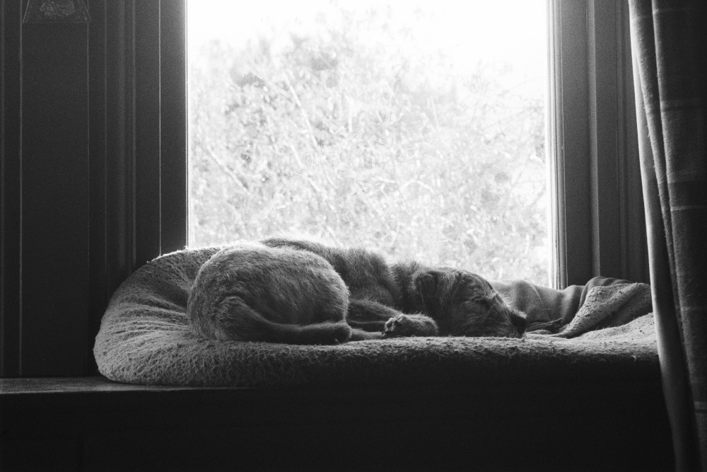

BIO
(rough idea of who I am)
I’m a computing science student at the University of Glasgow. It's stressful at times but I've enjoyed it thus far.
Drawing is probably the hobby I’m most passionate about. I’ve been drawing for a couple years but I still have a ways to go before I’m confident in my abilities. Most of what I like to draw is character stuff. Mostly weird things. I'll see if I can find some to post.
Cycling is another one. I got into it as a way to commute to and from uni when I was first in halls. Now I've got a project bike, a vintage Raleigh road-bike. I've called them Jam, because when I got them the seat post was completely jammed just from the spray-paint job of the perviouse owner. It took me, my mum and my dad with a kettle and a pipe wrench to heat, cool, twist and finally free the seat post. Jam's now my daily-driver after about 3 months of work, with more work planned for when I'm not busy with uni or other things.

I’m getting into photography, just a little bit though. I have one of my mums old cameras that I’ve loaded up with black and white film. Turns out it’s a pain to find anywhere that does black and white for 35mm, but I’ve got my first role back recently and I think it turned out quite well, so I think I’ll continue with it.
Before this I’ve never really been interested in taking pictures. It was always something quite mundane and effortless, that was with a phone camera, where it does most of the work for you. You just need to be facing roughly in the right direction and then the goblins in the box take care of the rest. Instance gratification.
But analogue photography has an almost ritual-like quality to it. You need to decide carefully what to shot due to the limited amount of film. You need to check for exposure and depth of field. Lots of things. I’m completely new to it and don’t really have much of an idea what I’m talking about. But it’s still fun.

Aside from photography and cycling, I like drawing. I'll see if I can find anything worth showing and springle it in between the content below.
I prefer drawing with black ink, and if I want to include colour I find that coloured pencil always works well. Its very easy to layer and you can used an eraser if you make any mistakes